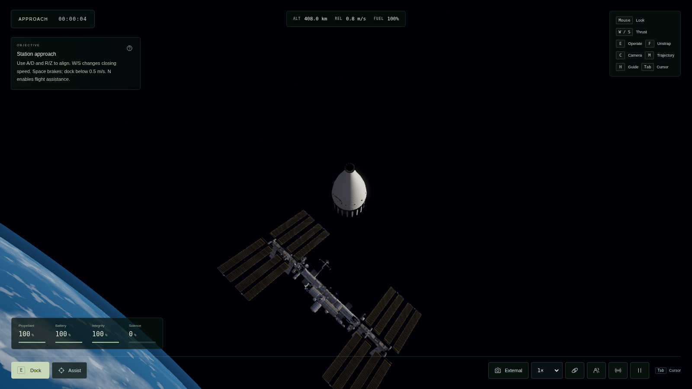
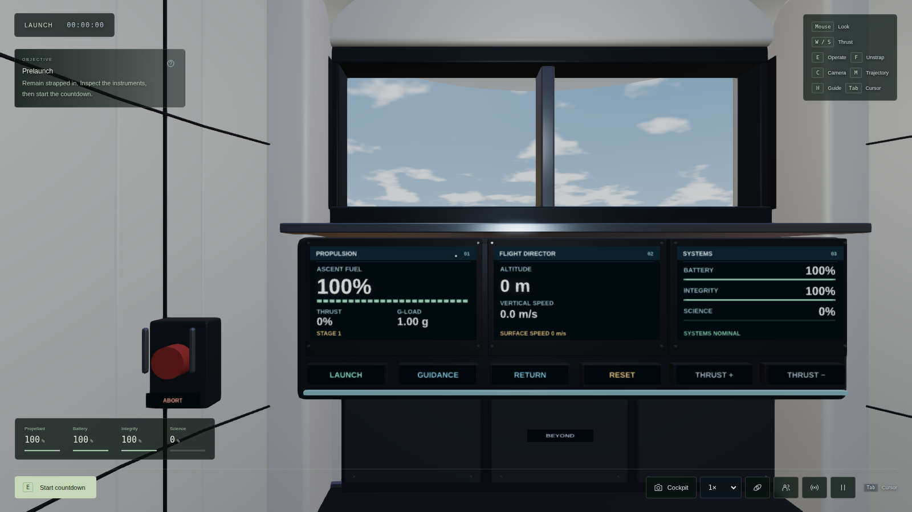
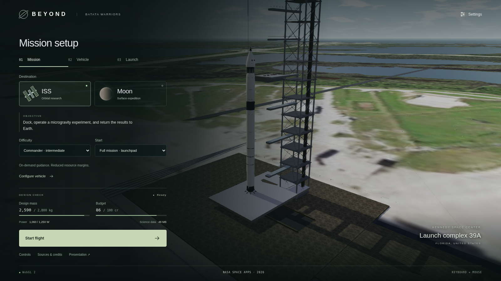

Two complete mission routes
International Space Station

Dock → research → return to Earth
Moon

Land → experiments and samples → return to Earth
Success requires completed science and a safe return with the results.
NASA Space Apps 2026
A first-person mission design game for the ISS and Moon.
Ammar Khadeli
Abdullah Khadeli
Selected challenge
Space Mission Design Game

Spacecraft, payloads, orbits and resources are often studied separately. Their engineering trade-offs can remain abstract.
Choose a design, fly it, conduct science and review the outcome. Change the plan and try again.

For students and space enthusiasts · Cadet, Commander and Expert difficulty
ISS imaging mission · Extra fuel reserve selected
| Planner check | Standard battery | With backup battery |
|---|---|---|
| Power demand | 1,140 W | 1,140 W |
| Power capacity | 1,100 W | 1,250 W |
| Design mass | 2,420 kg | 2,550 kg |
| Budget used | 75 / 100 credits | 84 / 100 credits |
| Launch readiness | Power limit exceeded | Ready |

Dock → research → return to Earth
Land → experiments and samples → return to Earth
Success requires completed science and a safe return with the results.
| RESOURCE | IMPLEMENTED USE |
|---|---|
| Design and Develop Science Missions | Connect mission objectives, operations and completion checks. |
| Goddard Mission Design Lab | Inform linked mass, power, budget and reserve choices. |
| JPL astrodynamic parameters | Supply Earth and Moon gravity constants for the flight model. |
| LRO imagery and elevation | Provide lunar geography and terrain, with local Apollo 11 data. |
| NASA 3D Resources and ISS facts | Provide credited reference models and orbital context. |
Mission planner, instruments, guidance and debrief.
3D environment, physical cockpit controls and trajectory view.
Gravity, thrust, propellant and mission resources determine outcomes.
Full mission routes passed launch-to-recovery browser tests.
Automated source and model checks passed.
Failure and restart tested on both routes. Browser tests used software rendering; hardware performance is unmeasured.
AI assistance: OpenAI Codex helped with code, tests, modeling scripts and documentation. The concept is the team's. Gameplay uses authored guidance; no LLM runs in the game.
Single player, with simplified physics and reconstructed environments.
Original code: MIT license.
Third-party assets retain their own credits and rights.